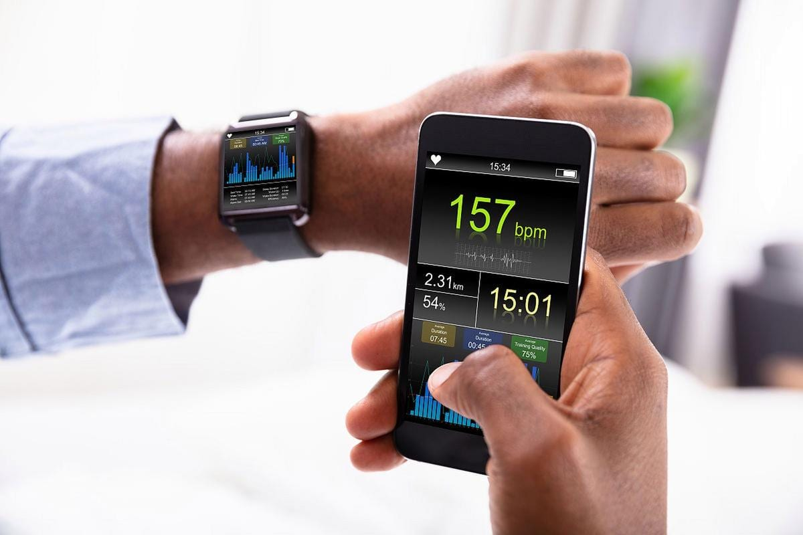

Fitbit Charge 6

Fitbit Charge 6 是 Fitbit 并入 Google 后的主力运动手环，心率算法回归更高准确度，支持 ECG 心电图、皮肤温度与血氧监测。内置 GPS 与 40+ 运动模式，并整合 Google 钱包与 YouTube Music 控制，是偏重健康数据的进阶手环。
客观评测
Charge 6 是 Fitbit 穿戴产品线中健康传感器最完整的手环之一：支持 ECG 心电图、血氧饱和度、皮肤温度变化与全天心率追踪，心率监测准确度较前代有明显回升。内置 GPS 支持户外跑步骑行独立记录，50 米防水可泳池佩戴。短板在于服务本地化：Google 钱包、YouTube Music 等功能在国内难以使用，Fitbit App 的部分深度分析与训练计划需要 Premium 付费订阅，续航约 7 天也落后于国产手环普遍两周的水平。
主观点评
如果你在意心率与睡眠数据的可信度，Charge 6 的数据一致性让人放心，睡眠分数与准备度分数看久了很有参考价值。但用国内手机配合它，总有一种“好东西用不上”的别扭：Google 钱包打不开，部分功能水土不服。它更适合愿意折腾、或身处海外生态的健康数据党，普通用户选它前要掂量服务可用性。
优点与不足
- ECG、血氧、皮肤温度等健康传感器齐全
- 心率算法准确度在手环中属第一梯队
- Google 钱包与音乐控制增强日常可用性
- 部分深度健康报告与训练功能需 Fitbit Premium 订阅
- 国内使用 Google 服务功能受限，体验打折扣
- 续航约一周，明显短于国产同类手环
参数规格
| 屏幕 | AMOLED 触摸屏，常亮可选 |
|---|---|
| 定位 | 内置 GPS + 多星定位 |
| 健康监测 | 心率、ECG 心电图、血氧、皮肤温度 |
| 运动模式 | 40+ 种运动模式 |
| 电池 | 续航约 7 天（视使用情况） |
| 防水 | 50 米防水 |
| 智能功能 | Google 钱包、YouTube Music 控制、来电短信通知 |
| 传感器 | 光学心率、加速度、三轴陀螺仪、皮肤温度 |
| 生态 | Fitbit App（部分高级功能需订阅） |
| 兼容 | Android 与 iOS |
| 充电 | 磁吸式充电线 |
| 重量 | 约 37g（含腕带，约数） |